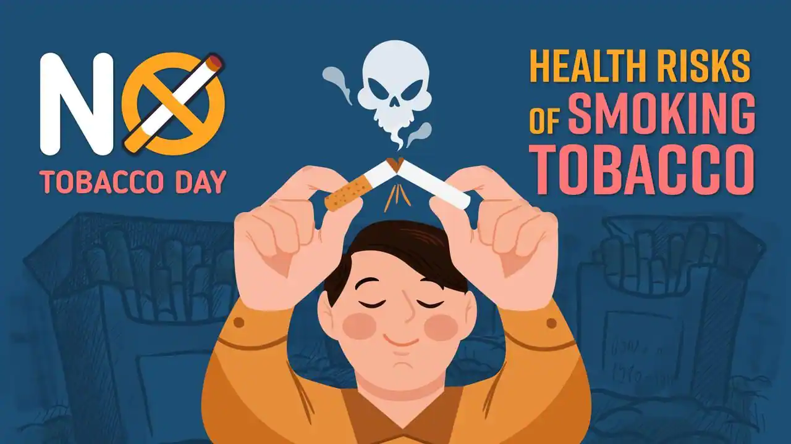

Tobacco comes in many forms, and none of them are safe.
Any amount of
tobacco use can cause addiction and be harmful to your health.
Understand the
consequences of tobacco use and nicotine addiction,
and learn why even smoking occasionally puts you at risk.
Tobacco is a plant. Its leaves are smoked, chewed, or sniffed for a variety of effects.
Tobacco contains the chemical nicotine, which is an addictive substance.
Tobacco smoke contains more than 7,000 chemicals, at least 70 of which are
known to cause cancer.
Tobacco that is not burned is called smokeless tobacco. Including nicotine,
there are at least 30 chemicals in smokeless tobacco that are known to cause
cancer.
HEALTH RISKS OF SMOKING OR USING SMOKELESS TOBACCO
There are many health risks from smoking and using tobacco. The more serious ones are down below:
• Blood clots and weakness in the walls of blood vessels in the brain, which can lead to stroke.
• Blood clots in the legs, which may travel to the lungs.
• Coronary artery disease, including angina and heart attack.
• Temporarily increased blood pressure after smoking.
• Poor blood supply to the legs.
• Problems with erections because of decreased blood flow into the penis.

Other health risks or problems:
• Cancer (more likely in the lung, mouth, larynx, nose and sinuses, throat, esophagus, stomach, bladder, kidney, pancreas, cervix, colon, and rectum)
• Poor wound healing after surgery
• Lung problems, such as COPD, or asthma that is harder to control
• Problems during pregnancy, such as babies born at a low birth weight, early labor, losing your baby, and cleft lip
• Decreased ability to taste and smell
• Harm to sperm, which may lead to infertility
• Loss of sight due to an increased risk of macular degeneration
• Tooth and gum diseases
• Wrinkling of the skin
Smokers who switch to smokeless tobacco instead of quitting tobacco still have health risks:
• Increased risk for cancer of the mouth, tongue, esophagus, and pancreas